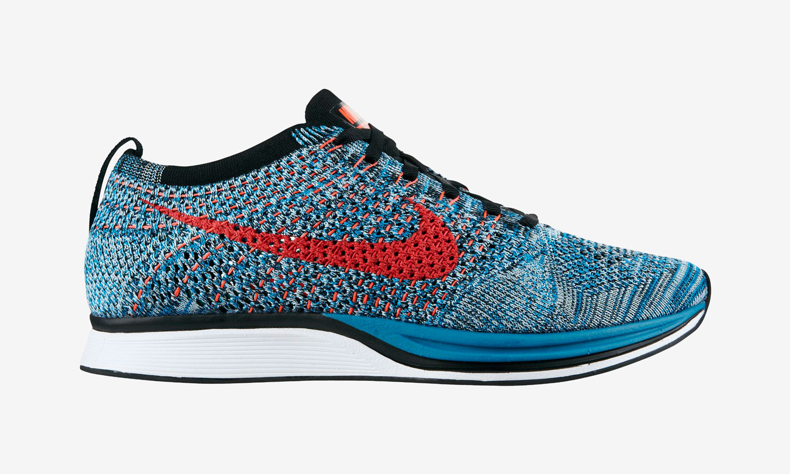
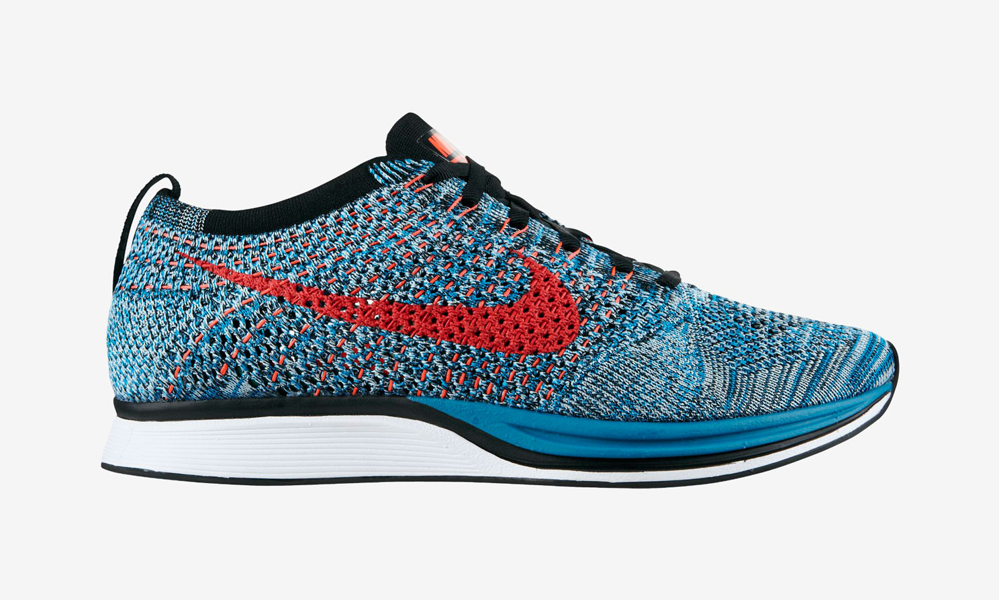

NEW RELEASES
Nike Flyknit Racer
There’s no doubting the appeal of the Nike Flyknit Racer, a model that saw a more than successful run over the span of 2013 in a plethora of head turning colors. But it looks like Nike wasn’t finished with the fan favorite performance runner just yet, as two new colorways surfaced on Nikestore and our available for your purchase today. The first of the two is a familiar color combination with a Phoenix Suns-esque palette as the upper is dressed in court purple and accents of atomic orange weave the Swoosh. Then there’s the neo turquoise iteration that sees a multicolor of bright blue and cool grey as the base while bright crimson serves as an accent.


New Balance Ball and Buck Mountain Green
The fellas over at Ball and Buck have returned with a new colorway of their ever-so popular Camo edition of the respected New Balance 574. The Ball and Buck x New Balance 574 ‘Mountain Green’ will retail for $148 USD and will be available at Ball and Buck store on Newbury Street as well as its online store: half of the 176 pairs will be available online on Christmas Day, while the remaining half will hit the brick-and-mortar store on Jan. 29th
Supreme Vans Black Lampin
Previewed here a couple of weeks ago, Supreme today officially announced its latest collaboration with Vans. For Summer 2013 the brand worked on the Vans Lampin, originally released 1993, as a durable skate shoe. Supreme worked on a new version of the sneaker. The Lampin will feature a premium suede nubuck upper with a vulcanized waffle outsole and leather insole. The Lampin will be available in four colorways made exclusively for Supreme. The sneaker will release on June 13 at Supreme stores and in their official online store.